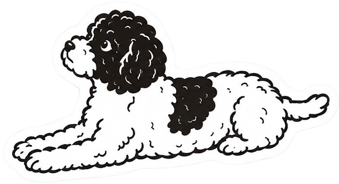
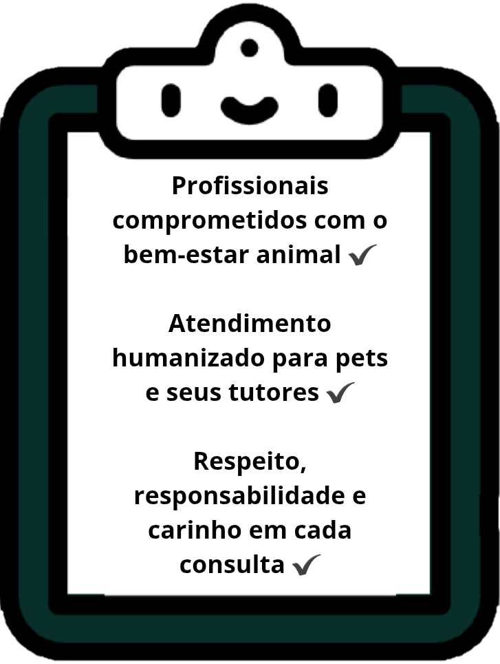
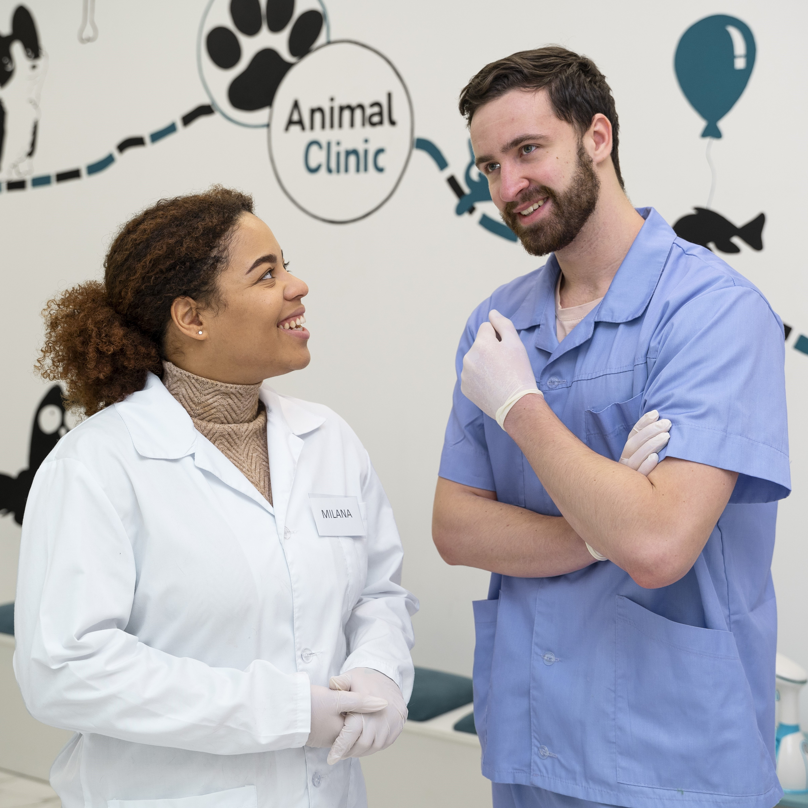
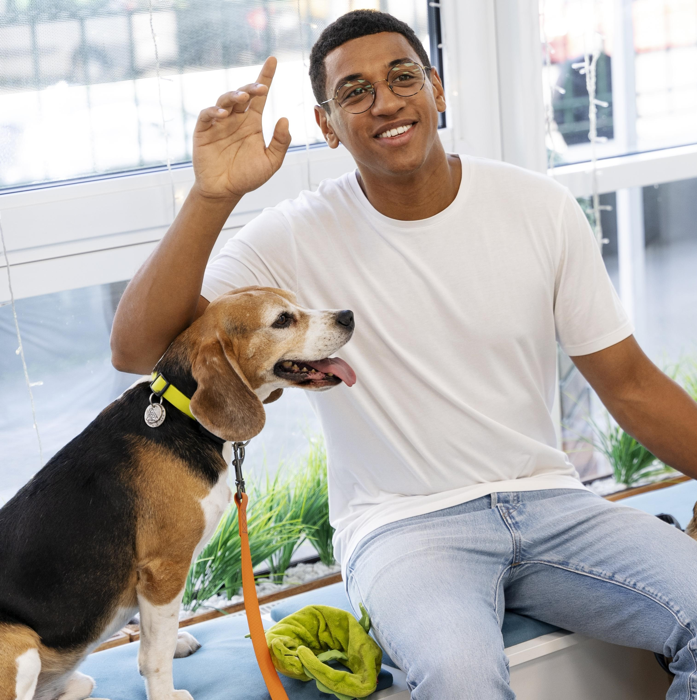

ODS 09
Indústria, Inovação e Infraestrutura
Auxílio na organização dos processos de controle e consulta através de tecnologias de programação.
A VetCare nasceu com o propósito de oferecer cuidado, carinho e atenção aos animais.
Nossa clínica acredita que cada pet merece um atendimento digno, acolhedor e de qualidade.


Buscando associar a inovação tecnológica à gestão responsável de recursos, a VetCare tem como parte de sua base os seguintes ODS da ONU:
Auxílio na organização dos processos de controle e consulta através de tecnologias de programação.
Gerenciamento do estoque de vacinas, verificando as quantidades disponíveis, os prazos de validade e a necessidade de reposição.
Acompanhe em tempo real a nossa reputação
4 atendimentos realizados

4 veterinários ajudam nossa clínica

4 tutores confiam na VetCare